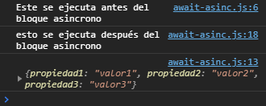

Uso de Await y Asinc en JavaScript
Se refiere a asincronia a la habilidad que tiene un elemento del código en ejecutarse en tiempo real, haciendo que hasta que el objeto no obtenga toda la información que precise, este, no devuelva nada hasta que resuelva todo lo que este dentro de si.
En la consola se puede ver un ejemplo. Se ve como, hasta que el temporizador no devuelva los valores del objeto, este no devuelve nada en la consola para que podamos visualizarlo.

Para hacer uso de las funciones asíncronas hay que declararlas como una función normal. En el caso de las funciones comúnes hay que poner la palabra reservada "async" antes de "function" para indicarle al sistema que va a ser asíncrona.
En el caso de las funciones flecha hay que indicar la palabra reservada "async" después del primer signo de igual (=). ej: const funcionAsincrona = async () => {}. De esta manera se declara una función flecha asíncrona.
Dentro del bloque con el que estemos trabajando tenemos que esperar donde el programa tiene que esperar(await), hasta que se termine de ejecutar para que continue con el resto del código. En este caso se utiliza el await.
Por ende, el await sirve para indicarle al programa que dato, función o consulta debe resolver primero antes de continuar ejecutando dicha función en segundo plano, o en otras palabras en otro hilo.
Las funciones asíncronas sirven para cuando tenemos que traer información pero que está no esta disponible al momento, pero, queremos que el cógido se siga ejecutando indiferentemente de sí la función se termino de ejecutar o no. Digamos que hace que las funciones se ejecuten en segundo plano.